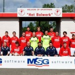

Contributie verhoging per 01-01-2017
Op de algemene ledenvergadering van 15 december j.l. heeft het hoofdbestuur een voorstel gedaan tot het verhogen van de contributie per 01-01-2017 voor alle categorieën binnen het... Lees meer
Op de algemene ledenvergadering van 15 december j.l. heeft het hoofdbestuur een voorstel gedaan tot het verhogen van de contributie per 01-01-2017 voor alle categorieën binnen het... Lees meer

Zoals jullie inmiddels weten heeft het RIVM uitgebreid onderzoek gedaan naar het sbr rubbergranulaat. Naast dit onderzoek heeft de gemeente Geertruidenberg... Lees meer
 De eerste wedstrijd na de winterstop was uit naar Bavel. Right-Oh kon op zijn zachts gezegd niet op zijn sterkst uitkomen. Blessures waren hier debet aan. Beide ploegen begonnen voorzichtig aan de wedstrijd en er kwamen dan ook weinig kansen... Lees meer
Momenteel wordt er achter de schermen hard gewerkt aan een vernieuwde jeugdafdeling binnen FC Right-Oh voor het seizoen 2017-2018 en verder... Lees meer